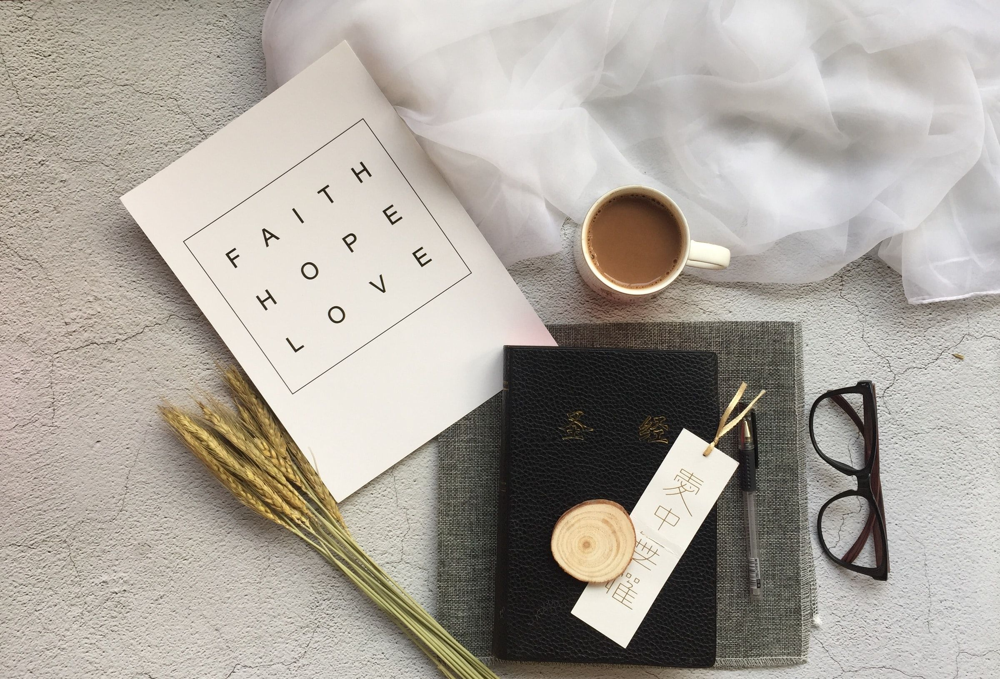

---
# Feel free to add content and custom Front Matter to this file.
# To modify the layout, see https://jekyllrb.com/docs/themes/#overriding-theme-defaults
layout: home
background: '/assets/img/homepage.png'
---
Welcome to Suzanne's Room!
Here you will find my resources blah blah blah (short welcome message)
